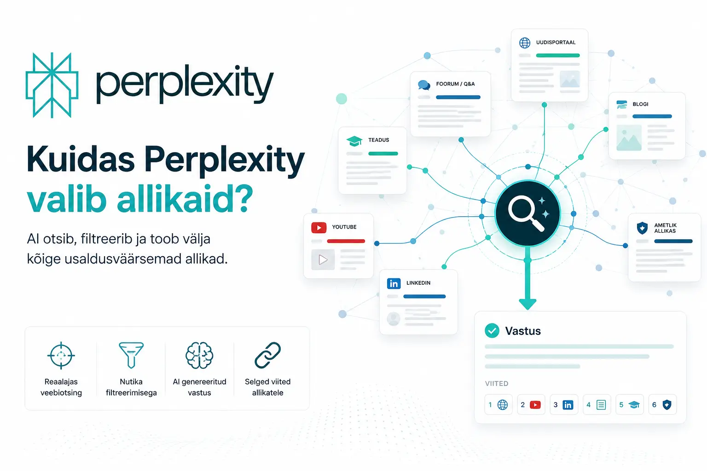
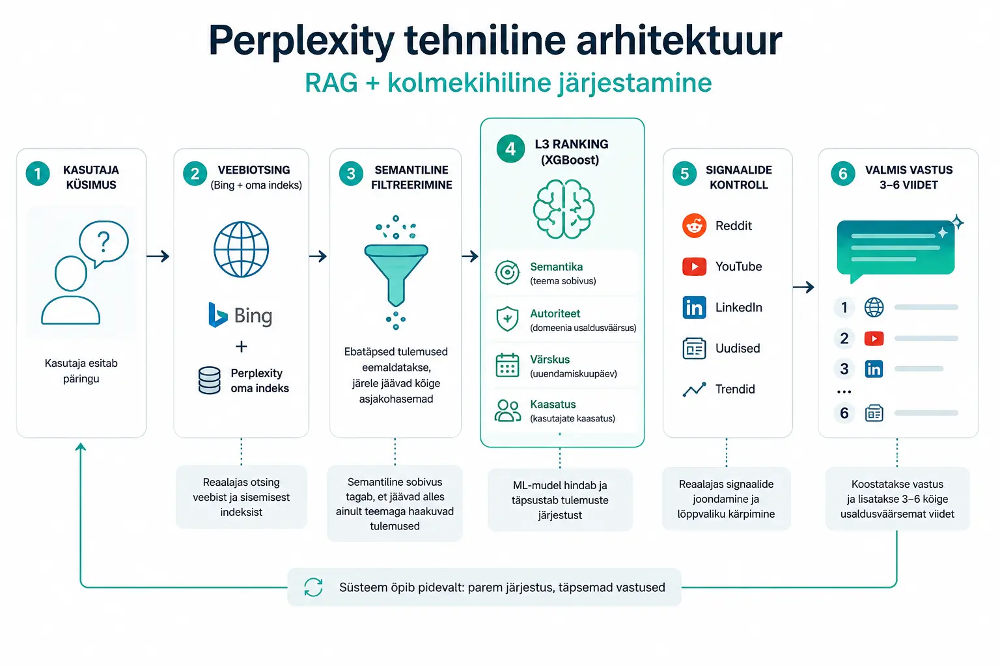
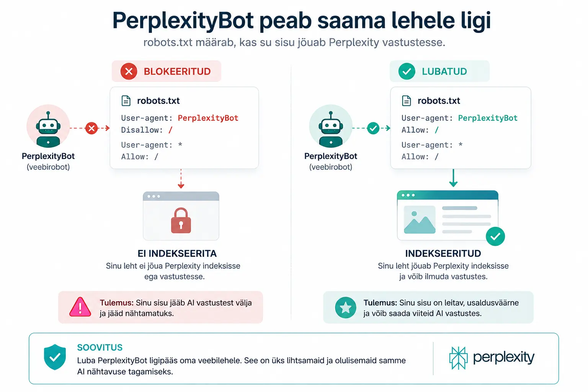
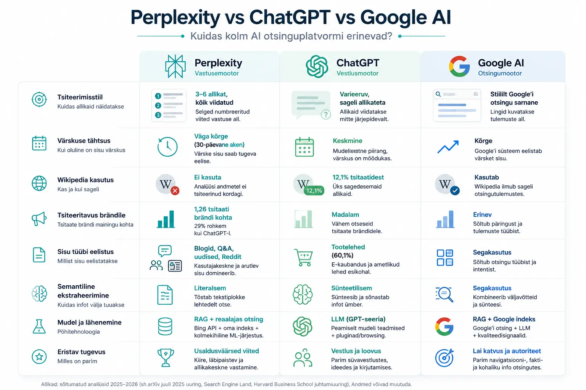

Perplexity ei ole otsingumootor[cite: 1]. See on vastusemootor[cite: 1].

Google näitab sulle kümmet linki[cite: 1]. Perplexity vastab sinu küsimusele ja lisab kolme kuni kuue allika viite[cite: 1].
See kõik on lihtsalt öeldes, aga tähenduse poolest on see täiesti fundamentaalne muutus[cite: 1]. Google eeldab, et sa oskad iseseisvalt uurida[cite: 1]. Perplexity eeldab, et sa tahad kohe vastust ja koos usaldusväärsete allikatega[cite: 1]. See seondub vahetult uue otsingumaastiku olemusega, millest kirjutasin täpsemalt juhendis Mis on AINO? AI Nähtavuse Optimeerimise juhend.
Ja inimesed on selle ka juba vastu võtnud[cite: 1]. 2022. aastal töötles Perplexity 3000 päringut päevas[cite: 1]. 2025. aasta maiks oli see number kasvanud 780 miljoni päringuni kuus[cite: 1]. 2026. aasta keskpaigaks prognoositakse 1,2–1,5 miljardit kuupäringut[cite: 1]. Väärtus: 20 miljardit dollarit[cite: 1]. Kasv aastate jooksul: 800%[cite: 1].
See ei ole eksperiment[cite: 1]. See on uus infrastruktuur[cite: 1].
Eesti turgu silmas pidades tähendab see, et Perplexity on jõudnud arvestatavaks kanaliks ka meie piirkonna kasutajate jaoks[cite: 1]. Eriti inglise keeles otsivatele professionaalidele, kes teevad ostupäringuid, valivad teenusepakkujat või uurivad konkreetset valdkonda[cite: 1].
Küsimus ei ole enam "kas mu sisu jõuab Perplexity'sse?"[cite: 1] Küsimus on "kas Perplexity valib just minu sisu?"[cite: 1]
Perplexity tehniline arhitektuur: RAG + kolmekihiline järjestamine

Perplexity töötab RAG-arhitektuuri (Retrieval-Augmented Generation) peal[cite: 1]. Iga päringu puhul toimub reaalajas veebiotsing, tulemuste filtreerimine ja seejärel vastuse genereerimine koos allikaviidete lisamisega[cite: 1].
Lihtsustatult: Perplexity ei vasta sulle oma mudeli põhjal[cite: 1]. Ta otsib aktiivselt veebist, valib allikad ja koostab vastuse nende põhjal[cite: 1].
Tehniline protsess koosneb kolmest kihist[cite: 1]:
1. kiht: Indeksi allikad
Perplexity ei kasuta Google'i indeksit[cite: 1]. Ta tugineb peamiselt Bing Web Search API-le, mis täiendab tema enda jooksvat indeksit[cite: 1]. Lisaks kaasab ta selektiivselt Redditi, YouTube'i, akadeemilisi andmebaase ja uudisteportaale[cite: 1].
Oluline: kui PerplexityBot ei saa su lehele ligi, ei ole sind olemas[cite: 1]. Roboti blokeerimist robots.txt kaudu tuleks vältida, kui soovid nähtav olla[cite: 1]. Meie tehnilised veebiarenduse Paketid katavad selle ligipääsu seadistamise täielikult.

2. kiht: L3-järjestaja (XGBoost mudel)
Perplexity kasutab kolmekihilist ML-järjestussüsteemi, mille tuumaks on XGBoost-mudel[cite: 1]. See hindab iga kandidaatlehte nelja põhimõõdiku alusel[cite: 1]:
| Tegur | Kirjeldus |
|---|---|
| Semantiline sarnasus | Kas su leht vastab päriselt sellele, mida kasutaja küsis[cite: 1]. Mitte ainult märksõnade, vaid tähenduse tasandil[cite: 1]. |
| Usaldusväärsus | Domeeni autoriteet[cite: 1]. Kas su domeen on tuntud ja mainitud usaldusväärsetes kohtades, või oled sa Perplexity jaoks tundmatu nimi[cite: 1]. |
| Värskus | Avaldamis- ja uuendamiskuupäev; tugevam kallutatuse mõju kui ChatGPT-l[cite: 1]. Millal su sisu viimati ilmus või uuendati[cite: 1]. Perplexity "unustab" vana sisu kiiremini kui teised AI-d[cite: 1]. |
| Kaasatus | Kas inimesed klikivad su lehele ja loevad seda, nii kohe pärast avaldamist kui ka pikema aja jooksul[cite: 1]. |
Kui semantiline sarnasus jääb alla lävendi, eemaldatakse leht kandidaatide hulgast täielikult – soovimata domeeniautoriteedist[cite: 1].
3. kiht: Signaalide joondamine
Lõppvaliku osas teeb süsteem nn "topeltkontrolli"[cite: 1]. Võrdleb tulemusi reaalajas signaalidega (YouTube'i trendid, multimodaalne sisu, 7-päevane kaasamine) ja kärbib allikate arvu 3–6 kõige usaldusväärsemani[cite: 1].
Oluline piirang: Perplexity ei luba ühel domeenil monopoliseerida vastust (`blender_web_link_domain_limit`)[cite: 1]. Ka tugev domeen saab ühes vastuses tavaliselt maksimaalselt 1–2 viidet[cite: 1].
Mida Perplexity tsiteerib? Uuringuandmed
Aasta juulis avaldas Kai-Cheng Yang arXiv'is analüüsi, mis hõlmas üle 366 000 tsitaadi 65 000 Perplexity vastusest[cite: 1]. Mõned peamised leiud[cite: 1]:
- Uudistesisu domineerib: Perplexity tsiteerib uudiste ja ajakirjandusliku sisuga lehti ebaproportsionaalselt sageli[cite: 1].
- Reddit on esikohal: 2025. aasta sügisese analüüsi kohaselt oli Reddit kõige sagedamini tsiteeritud domeen, millele järgnesid YouTube ja suured väljaanded nagu Forbes[cite: 1].
- LinkedIn kerkis esile: November 2025 – veebruar 2026 perioodil tõusis LinkedIn professionaalsete päringute jaoks tsiteeritud domeenide pingerivis väljastpoolt top-20 esikohale[cite: 1].
- Wikipedia puudub: Analüüsi andmetel ei tsiteerinud Perplexity Wikipediat kordagi, samal ajal kui ChatGPT kasutas Wikipediat 12,1% tsitaatidest[cite: 1].
- AI, tehnoloogia, teadus, äri – need teemavaldkonnad saavad kuni 3-kordse nähtavuse korrutaja[cite: 1]. Meelelahutus ja sport on vastupidi allapoole tõrjutud[cite: 1].
- Sisu kaob kiiresti: Sisu nähtavus langeb aktiivselt pärast umbes 30-päevast akent, kui sisu ei värskendata[cite: 1].
Perplexity vs ChatGPT vs Google AI: võrdlus AINOst lähtuvalt
| Kriteerium | Perplexity | ChatGPT | Google AI |
|---|---|---|---|
| Tsiteerimisstiil | 3–6 allikat, kõik viidatud[cite: 1] | Varieeruv, sageli allikateta[cite: 1] | Stiililt Google'i otsingu sarnane[cite: 1] |
| Värskuse tähtsus | Väga kõrge (30-päevane aken)[cite: 1] | Keskmine[cite: 1] | Kõrge[cite: 1] |
| Wikipedia kasutus | Ei kasuta[cite: 1] | 12,1% tsitaatidest[cite: 1] | Kasutab[cite: 1] |
| Tsiteeritavus brändile | 1,26 tsitaati brändi mainingu kohta (29% rohkem kui GPT)[cite: 1] | Madalam[cite: 1] | Erinev[cite: 1] |
| Sisu tüübi eelistus | Blogid, Q&A, uudised, Reddit[cite: 1] | Tootelehed (60,1%)[cite: 1] | Segakasutus[cite: 1] |
| Semantiline ekstraheerimine | Literaalsem (tõstab tekstiplokke otse)[cite: 1] | Sünteetilisem[cite: 1] | Segakasutus[cite: 1] |
Tähtis järeldus: Perplexity ei ole üks monoliitkanalite hulgas[cite: 1]. Iga AI otsinguplatvorm käitub erinevalt[cite: 1]. ChatGPT jaoks optimeeritud sisu ei tähenda automaatselt nähtavust Perplexity's[cite: 1].

Miks mõni leht domineerib - ja miks suurem osa sisust ei jõua kuhugi?
Põhjus 1: Domeeniautoriteet kui eelfilter
Perplexity eelistab allikaid, mida on mainitud mitmetel autoriteetsetel platvormidel[cite: 1]. Umbes 60% Perplexity tsitaatidest kattuvad Google'i top-10 orgaaniliste tulemustega – mitte sellepärast, et Perplexity kasutaks Google'i indeksit, vaid sellepärast, et mõlemad süsteemid premeerivad sama asja: domeeni laiapõhjalist autoriteeti[cite: 1]. Sellest orgaanilise otsingu autoriteedi nihkest kirjutasin loos: SEO on surnud? Ei - aga reeglid on muutunud. Domeeniautoriteet moodustab hinnanguliselt umbes 15% Perplexity järjestamisalgoritmist[cite: 1].
Põhjus 2: Teemaklastreid kirjutavad domeenid võidavad
Perplexity'l on parameeter `boost_page_with_memory`, mis premeerib domeene, mis katavad sama teemat mitmes omavahel seotud artiklis[cite: 1]. Kui sul on üks hea artikkel, saad tsitaadi[cite: 1]. Kui sul on 10 omavahel seotud artiklit ühel teemal, siis muutud regulaarseks allikaks[cite: 1]. See on klastristrateegia põhiargument: ühe suure põhiartikli asemel kirjuta välja kogu teemavaldkond[cite: 1].
Põhjus 3: Sisu ekstraheerimisvõime
Perplexity on literaalsem kui ChatGPT[cite: 1]. Ta tõstab tekstiplokke lehtedelt otse, mitte ei sünteesi[cite: 1]. See tähendab, et iga teie lehe lõik peab olema "tsiteerimiskõlblik" iseseisvalt[cite: 1]. Ehk siis ilma eelneva kontekstita arusaadav[cite: 1].
Näide: "AINO on lühend, mis tähistab AI Nähtavuse Optimeerimist - strateegiate kogumit, mis aitab ettevõtetel jõuda vastuste kujul AI otsingumootorite tulemustesse."[cite: 1] See lausete tüüp tõstetakse esile[cite: 1]. "Nugs eelnevalt mainitud..." – ei tõsteta[cite: 1].
Põhjus 4: PerplexityBot peab saama lehele ligi
Kui su veebilehe tehniline seadistus blokeerib roboteid, renderdab JS-i aeglaselt või laseb sisu lehe laadimisel hiljem laadida, ei indekseeri Perplexity sind usaldusväärse allikana[cite: 1].
Eesti turu eripära Perplexitys
Siin on koht, kus keel toimib geolokatsiooni signaalina – nagu ma olen oma varasemas uurimistöös Kas eesti keel hoiab Eesti e-kaubandust? kirjeldanud[cite: 1]. Perplexity kasutab peamiselt ingliskeelset sisu[cite: 1]. Eestikeelseid allikaid on vähe[cite: 1]. See loob paradoksi[cite: 1]:
- Halb uudis: Eestikeelse sisu jaoks on konkurents akadeemilistes allikates, usaldusväärsetes väljaannetes ja struktureeritud andmetes minimaalne[cite: 1]. Perplexity ei oska hästi hinnata eestikeelse allika autoriteeti[cite: 1].
- Hea uudis: Eestikeelne päring (nt "parimad veebimajutuse pakkujad Eestis") annab Perplexity'le tugevama geograafilise signaali kui ingliskeelne[cite: 1]. Kui oled ainuke struktureeritud, värske, eestikeelne allikas konkreetsel teemal, siis oled ka tsitaadis esimene[cite: 1].
Mida see tähendab praktikas: eestikeelse turu ettevõtted ei pea võistlema Forbes-iga[cite: 1]. Nad peavad võistlema tühimikuga[cite: 1]. Ja tühimiku täitmine on kõigist kõige lihtsam ülesanne[cite: 1].
Praktilised AINO soovitused Perplexity jaoks
1. Kirjuta iga lõik nii, nagu see oleks iseseisev osa
Perplexity tõstab tekstiplokke lehtedelt otse[cite: 1]. Iga lõik peab algama konkreetse faktiga, definitsiooniga või vastusega[cite: 1]. Väldi sissejuhatusi nagu "Selles osas vaatame..."[cite: 1]
Tee nii: AINO (AI Nähtavuse Optimeerimine) on strateegiliste meetmete kogum, mille eesmärk on tagada ettevõtte nähtavus AI-põhiste otsingumootorite ja vastusegeneraatorite vastustes[cite: 1].
Mitte nii: Nagu me eelmises osas nägime, on oluline mõista, mida AINO endast kujutab enne, kui asume...[cite: 1]
2. Kasuta FAQ ja HowTo schema märgistust
Structured data on üks usaldusväärsemaid tehnilisi investeeringuid Perplexity nähtavuse jaoks[cite: 1]. FAQPage schema võimaldab süsteemil kaardistada küsimus-vastus paarid otse päringusse[cite: 1]. HowTo schema töötab juhendite puhul[cite: 1]. Kogu seda tehnilist poolt oleme samm-sammult kirjeldanud loos: Praktiline checklist AI-vastustesse jõudmiseks.
3. Kasuta täpseid väljendeid
Perplexity hindab kanoonilist väljendamist[cite: 1]. Kirjuta "ChatGPT-4o" mitte "OpenAI uusim mudel"[cite: 1]. Kirjuta "Perplexity AI" mitte "see AI otsingumootor"[cite: 1]. Täpne keelekasutus = tugevam seostamine = kõrgem tsiteerimistõenäosus[cite: 1].
4. Värskenda sisu iga 2–3 kuu järel
Perplexity'l on agressiivsem värskuskallutatuse efekt kui ChatGPT-l[cite: 1]. Ilma uuendusteta sisu hakkab nähtavust kaotama umbes 30 päeva pärast[cite: 1]. Teatud teemade puhul (AI, äri, tehnoloogia) võib see olla isegi kiirem[cite: 1]. Lahendus: planeeri kord paari kuu tagant igas artiklis vähemalt ühe lõigu uuendus + kuupäeva muutus[cite: 1].
5. Ehita teemaklastreid, ära avalda üksikuid artikleid
Üks hea artikkel annab sulle võimaluse[cite: 1]. 10 omavahel seotud artiklit samal teemal annavad sulle positsiooni[cite: 1]. Perplexity premeerib domeene, mis demonstreerivad laiapõhjalist ekspertiisi läbi seotud sisu[cite: 1].
6. Ehita väljaspool oma saiti
Reddit, LinkedIn, YouTube, valdkondlikud kataloogid on allikad, mida Perplexity eraldi hindab[cite: 1]. Eriti LinkedIn tõusis 2025. aasta novembrist 2026. aasta veebruarini professionaalsete päringute kõige tsiteeritumaks domeeniks[cite: 1]. LinkedIn postitus, mis sisaldab konkreetset faktilist vastust küsimusele, võib anda sulle Perplexity-tsitaadi[cite: 1].
7. Väldi PerplexityBoti blokeerimist
Perplexity avaldab ametlikult oma botide IP-vahemike JSON-failid WAF-seadistuste jaoks[cite: 1]. Kui su veebilehet kasutab agressiivseid tulemüüre, kontrolli, et PerplexityBot on lubatute loendis[cite: 1].
Mida Perplexity EI premeeri
Analüüsid näitavad, et järgmiset tegurid ei anna Perplexitys mõõdetavat eelist[cite: 1]:
- Pikk lehekülg pikkuse pärast[cite: 1]
- Wikipedia-laadne sisu (Perplexity ei tsiteeri Wikipediat)[cite: 1]
- Ainult tootelehed (Perplexity eelistab blogisisu, Q&A-d ja foorumeid)[cite: 1]
- Staatilised, harva uuendatavad leheküljed kiirelt muutuvates valdkondades[cite: 1]
Kokkuvõte: Perplexity optimeerimise 7 põhimõtet
- Iga lõik peab toimima iseseisvalt: ilma eelneva kontekstita[cite: 1]
- Kasuta FAQ ja HowTo schemat: tehniline selgus = tsiteerimistõenäosus[cite: 1]
- Täpsed nimetused: "AINO" mitte "see AI-optimeerimise asi"[cite: 1]
- Värskenda iga 2–3 kuu tagant: eriti kiirelt muutuvates teemades[cite: 1]
- Ehita teemagrupid: 10 seotud artiklit = püsiv positsioon[cite: 1]
- LinkedIn ja valdkondlikud foorumid: Perplexity tsiteerib neid aktiivselt[cite: 1]
- Luba PerplexityBot: ilma indekseerimiseta ei ole sind Perplexitys olemas[cite: 1]
KKK – Korduma Kippuvad Küsimused
Kas Perplexity kasutab Google'i indeksit?
Ei[cite: 1]. Perplexity kasutab peamiselt Bing Web Search API-t kombineerituna oma sisemise indeksiga[cite: 1]. Umbes 60% tulemustes kattuvus Google'i top-10-ga tuleneb mõlema süsteemi sarnastest autoriteedikriteeriumitest, mitte ühisest indeksist[cite: 1].
Kui kiiresti uus sisu Perplexitysse jõuab?
Hästi struktureeritud, PerplexityBotile ligipääsetav sisu võib ilmuda vastustes mõne tunni jooksul pärast avaldamist[cite: 1]. Sellel on tugevam värskuskallutatuse mõju kui enamikul teistel AI otsinguplatvormidel[cite: 1].
Kas eestikeelne sisu jõuab Perplexitysse?
Jah, kuid väiksema indekseerimistihedusega[cite: 1]. Eestikeelne päring annab geograafilise signaali, mis tõstab kohalike allikate tsiteerimistõenäosust[cite: 1]. See on konkurentsieelis kohalikele tegijatele[cite: 1].
Kas Perplexity tsiteerib Wikipediat?
Uuringuandmete põhjal mitte[cite: 1]. See eristab Perplexityd selgelt ChatGPT-st, mis kasutame Wikipediat umbes 12% tsitaatidest[cite: 1].
Kas schema märgistus tõesti aitab Perplexitys?
Jah[cite: 1]. Uuringud näitavad, et FAQPage, Product ja ItemList schema's lehekülgi tsiteeritakse oluliselt sagedamini kui sarnase sisuga märgistamata lehti[cite: 1].
Kas Sinu bränd on AI vastustes olemas?
Ära jäta oma ettevõtte tulevikku juhuse või konkurentide otsustada. Vaatame Sinu veebilehe AI-nähtavusele otsa ja paneme paika reaalse tegevuskava.
Broneeri tasuta konsultatsioon →Mina olen Feliks Stavitski, digitaalturunduse konsultant ja AINO (AI Nähtavuse Optimeerimine) mõiste ellu kutsuja Eestis. Ma aitan Eesti ettevõtetel muutuda nähtavaks ka AI-põhistes otsisüsteemides.